Presentation to the Planning Institute of Australia Congress
Gold Coast, Queensland, Australia - 17 May 2019
Posted here: 24 June 2019
The presentation on the day roughly followed this script.
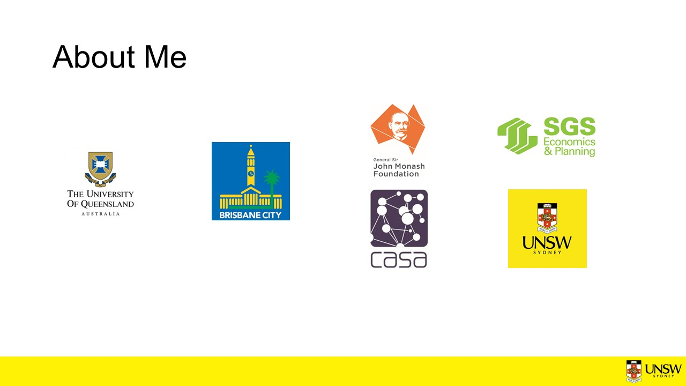Today I want to talk about how digital technology is changing planning work. My name is Claire Daniel and I actually started my career here in Queensland, got my town planning degree at UQ and worked for many years at Brisbane City Council. I was fortunate at this time to be part of a rotational program which gave me broad experience across a range of traditional planning roles including development assessment, strategic planning, infrastructure coordination, parks and environment and the city's project office. Although I enjoyed my job, it became more and more apparent to me as I worked through these different roles that there was a significant opportunity to improve the way we collected, analysed and shared data, not just within my organisation, but across the built environment profession at large. In 2014 I made this case to the General Sir John Monash Foundation and was fortunate enough to receive a scholarship to complete the MSc in Smart Cities and Urban Analytics at the Centre for Advanced Spatial Analysis at University College London where, amongst other things, I learnt to code and met a bunch of great people. Since returning I have been with SGS Economics and Planning in Sydney and have just started a PhD at UNSW City Futures in order to devote more substantial time to this topic.
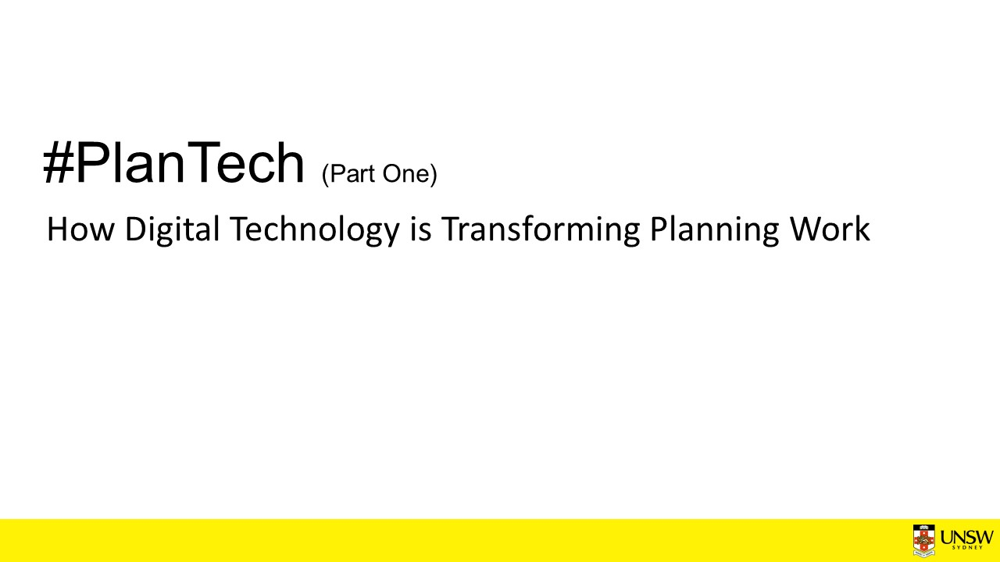That's more than enough about me, let's now get into the talk. If your inbox or newsfeed is anything like mine you are probably already feeling overwhelmed by talk about technology, words like smart cities, artificial intelligence, data-driven decision making. However, in this torrent of information there is one consistent feature, and that is the lack of urban planners in the conversation, and from my point of view this is not a good thing. As technology becomes ever more pervasive in shaping our cities and communities, this lack of engagement from the urban planning profession creates the risk of poor governance and poor urban outcomes.
Today however, I want to look inward at the day to day work undertaken by those of us employed as urban planners. Digital technology is set to radically change how we spend our time on planning tasks, yet as a profession in Australia we are yet to have a coherent discussion about the impact of digital technology on planning work. This is what I want to start today.
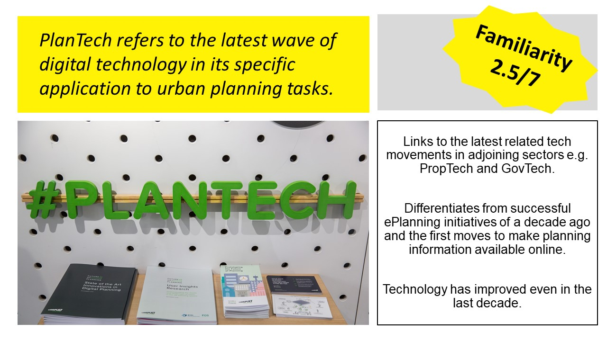This conversation has already started overseas, and in order engage with this international conversation we need to know a new word "PlanTech". This term has been developed to describe the latest wave of digital technology in its specific application to urban planning tasks. On the screen there is a photo taken from a display at the Future Cities Catapult in London who are leading the way with their ongoing investigation into the "Future of Planning". This term allows urban planning to tap into the latest tech movements in adjoining sectors, such as "PropTech" and "GovTech". The term also serves to differentiate from "ePlanning" which was developed over a decade ago and heavily associated with the profession's first (largely highly successful) initiatives to put planning information online. Technology has improved radically even within the last decade bringing with it many new opportunities and challenges for the profession.
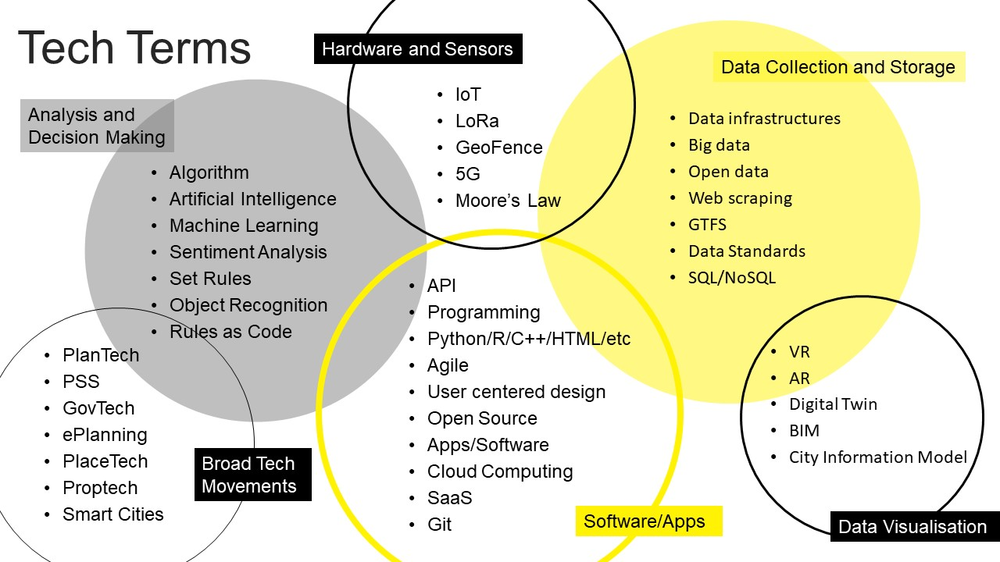PlanTech however, is not the only word we need to know and as we move into the tech world we start to get exposed to a whole range of unfamiliar technology. The diagram on screen is just a brain dump of terms I have learnt since starting down this path with my Masters in London, none of which I have ever really come across in my undergraduate training or local government planning work in the early 2010s.
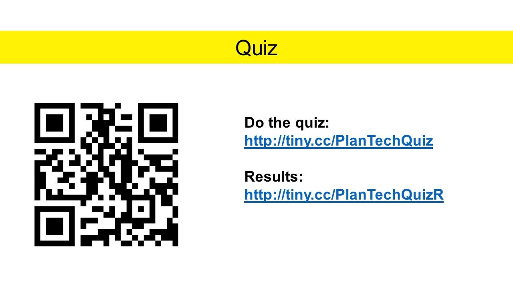Oh, and we have had a bit of an online quiz going around familiarity with different tech terms, some of the results will appear as a "familiarity score" out of 7 on these slides.
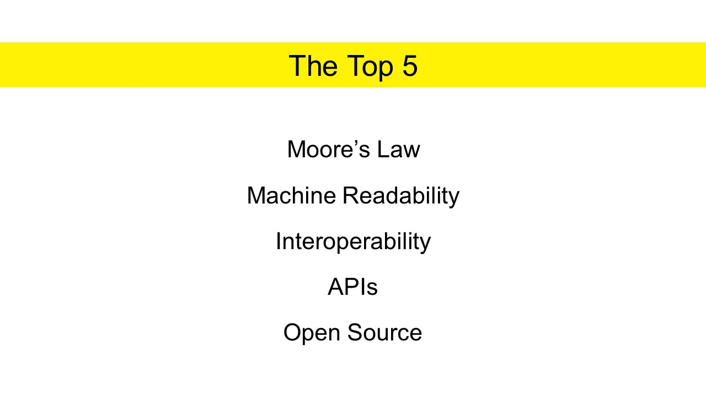However, in order to not overwhelm you today I have picked the top five that are, in my estimation, the most urgent and immediately relevant. You may notice that some popular terms like AI have not made this list, and that is because before we even start talking about more advanced analytic techniques there are a number of basics we need to get right and as we go through you will notice that a lot of these terms simply deal with the consistent exchange of digital information.
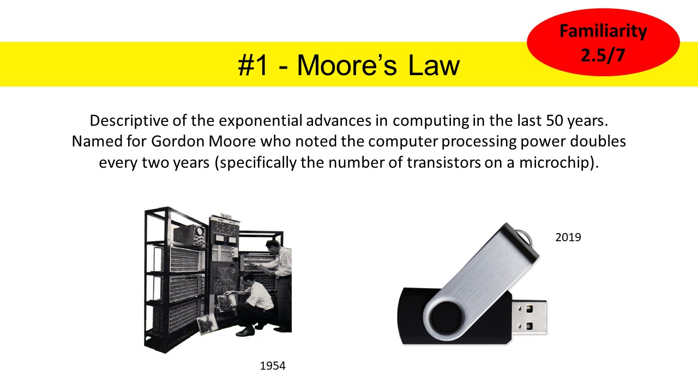The first is Moore's Law. Essentially this term is descriptive of the exponential increases in computing power over the last 50 years. It is named for a guy called Gordon Moore who observed back in 1970 that the number of transistors on a microchip doubled every two years (and it continued to do so for much longer than he originally predicted).
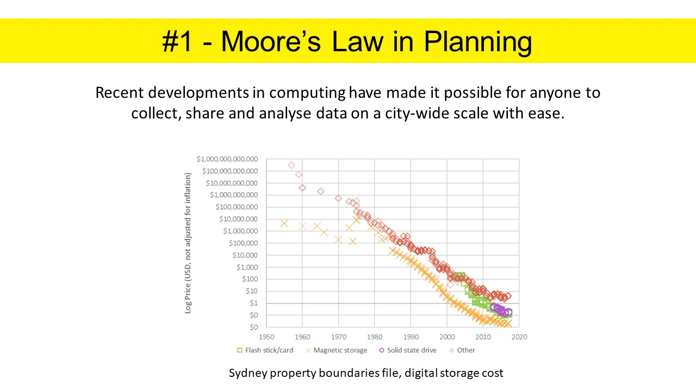What does this mean for us planners though? Essentially it means that recent developments in computing have made it possible for anyone to collect, share and analyse data on a city-wide scale with ease. On the screen there is a chart I have made that shows the exponential declines in the cost of digital storage, equivalent for a file containing all the property boundaries in Sydney (log scale), a file just under one gigabyte and we can see how recent this phenomena is. During this time internet speeds have also improved dramatically. It is probably not so long ago that for a file like this you would physically transport your disk or USB, whereas now we would just download it without thinking twice.
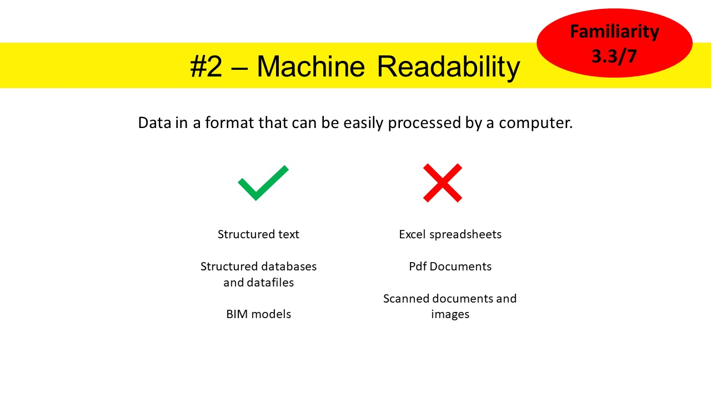Alright, so now we have all this computing power, can we use it? And this comes to my second term, "Machine Readability". Machine readability simply refers to data in a format that can be easily processed by a computer. A few examples of machine readable formats is structured text, structured databases and files like .csvs, .jsons and BIM models. Examples of data that is not easily machine readable includes Excel spreadsheets, pdf documents and scanned images and documents.
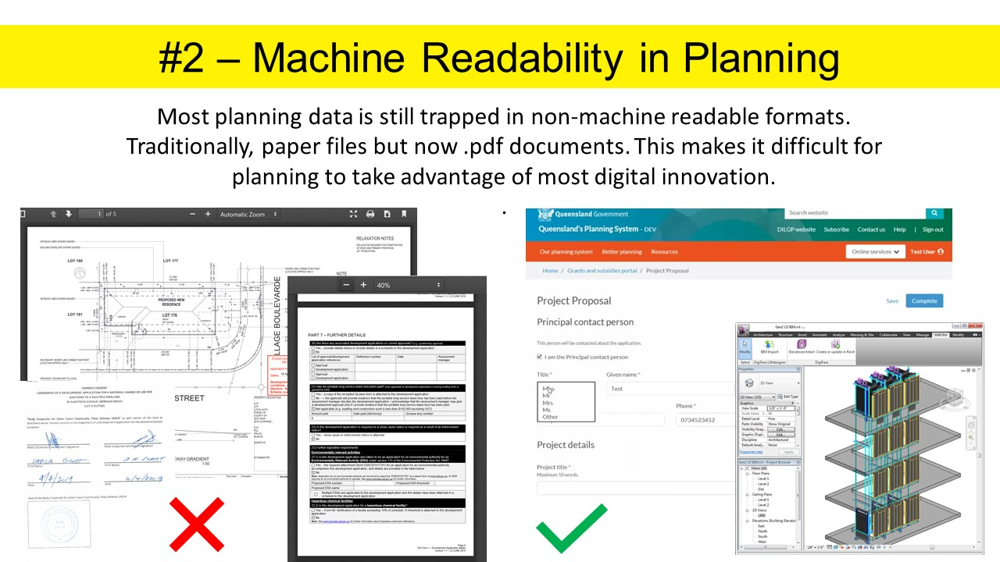Thus comes our most pressing problem when it comes to digital innovation in planning and that is that most of our planning data is still trapped in non-machine readable formats, first paper files and now .pdfs. On the left there are just some screenshots I grabbed from applications on Gold Coast's PD Online. Instead we really need to be moving to things like online forms, where the information entered can automatically be sent to a database, or better yet, standardised 3D BIM models with planning information encoded.
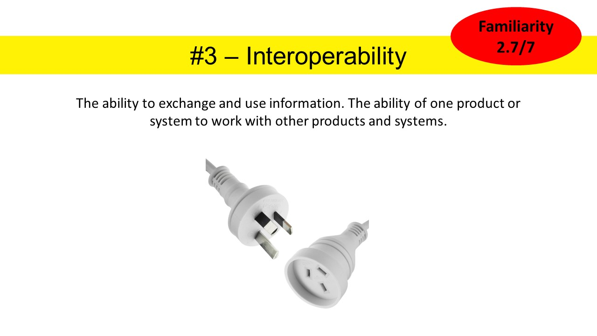So, although we now know we have to make our data machine readable, it is still of limited use though if every planning authority decides to do it a different way. Therefore, we come to our third tech term which is interoperability. This term refers to the ability to exchange and use information, or the ability of one product or system to work with other products or systems. The classic example of course would be power sockets, that ever appliance brought in Australia is designed to work with Australian power sockets.
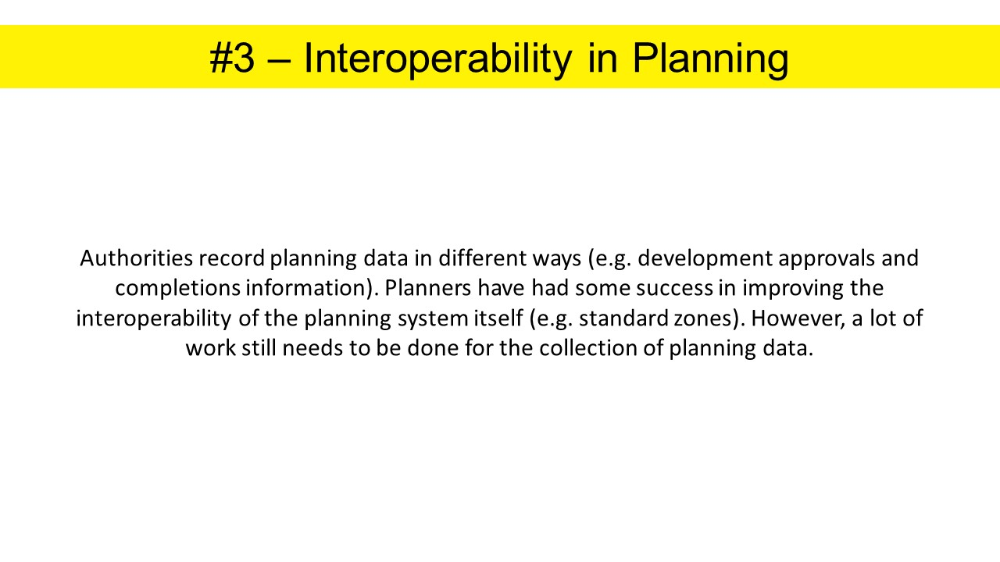So, for us planners, because we have never been able to share information very easily before we have generally record it differently from place to place. It then takes a huge amount of manual effort for anyone who wants to stitch this information together, for example, to see where development has been approved across a metropolitan area. Because of the effort involved, this is information we currently don't have reasily available despite the fact it is pretty much essential to do good infrastructure planning.
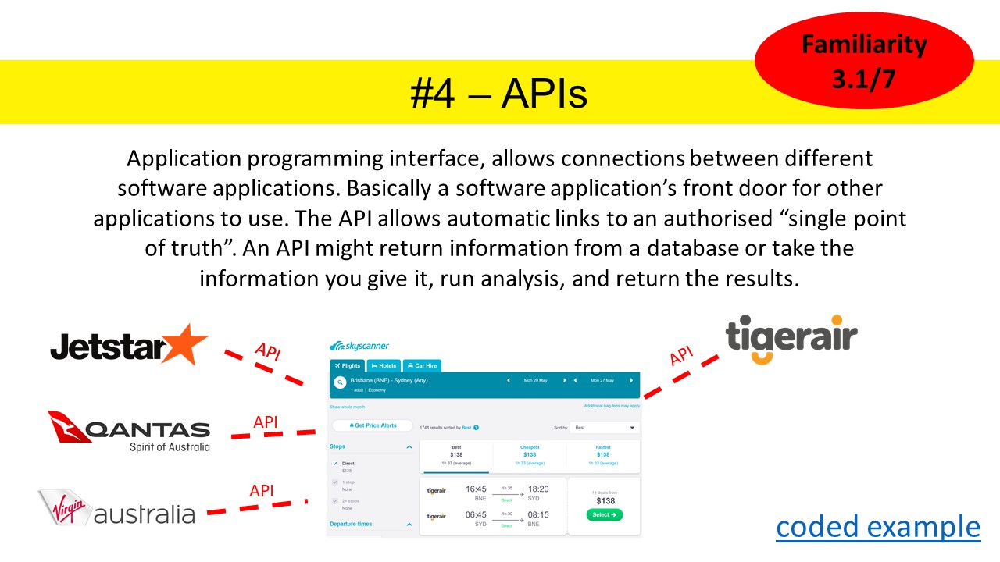So, we have machine readable information, that is interoperable between all our local authorities. How are we going to access it? My next tech term is API, or application programming interface. You are pretty much only ever going to hear the acronym though. APIs allow for automatic connections between different software applications. Basically, a front door for another software application to visit. I practiced this presentation for some friends who suggested Skyscanner as a good example of an application that uses APIs to give you the most up to date information on flights, but perhaps more relevant to this conference Neighbourlytics also works by pulling data automatically through the various APIs of social media websites.
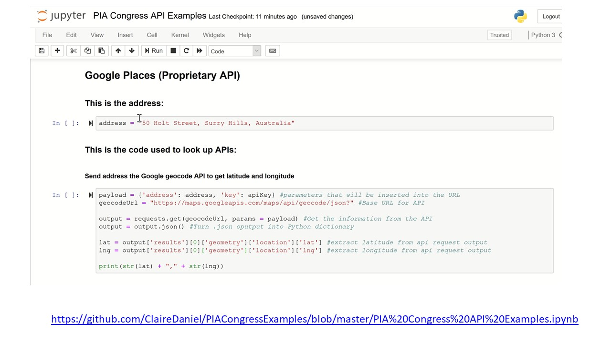From a programming perspective it is also worth noting that APIs aren't actually that hard to use and I have coded a few public and proprietary examples here that are up on my GitHub account.
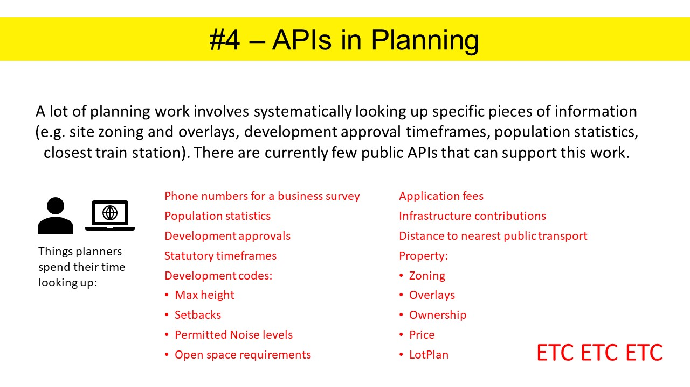What does this mean for planners? Actually it means a lot. As an early career planner I think I could describe most of the time spent on the job as systematically looking up specific pieces of information. Whether assessing DAs, writing DAs, calculating population forecasts, responding to community submissions, I am for the most part acting as a human API. However, in planning we have few APIs that could support our work, for the kind of information you see on screen. APIs allow us to build software applications that could automatically retrieve the most up to date information direct from the original source. Simply getting this right though would probably remove a large part of the administrative burden of planning work.
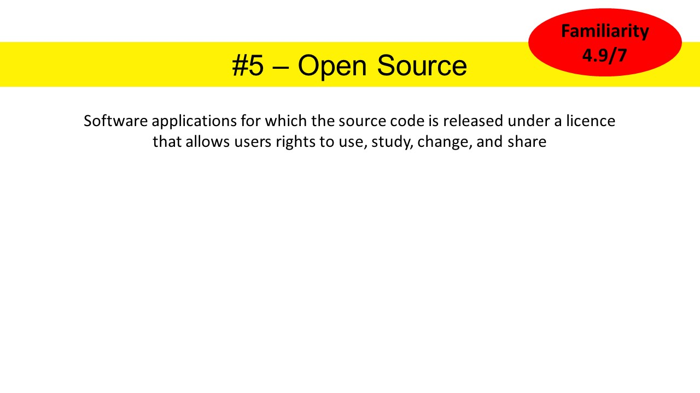And now we come to my final tech term which is "Open Source". This term refers to software applications for which the source code is released under a licence that allows users to use, study, change and share it.
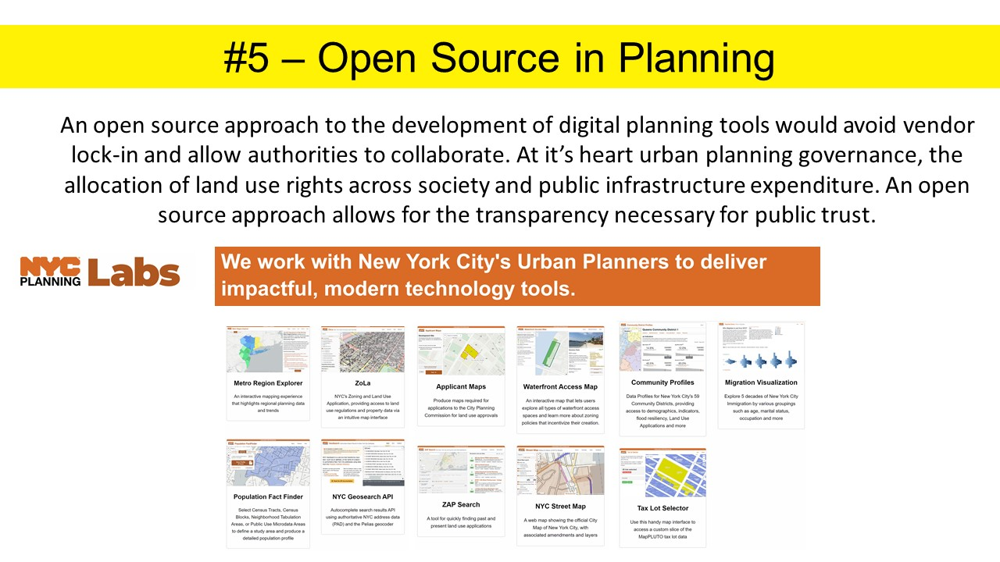For us planners open source is useful for three reasons. The first is that it prevents the duplication of work and allows for collaboration between planning authorities. Instead of starting from scratch every time you want to develop a tool that will calculate your infrastructure contributions, assess low-risk housing extensions and update your population forecasts, you can re-use and modify work that has been done elsewhere. The second is, where public money has been used to fund software development, it makes sense to release the code as a public resource. The third reason is a matter of governance. As planners, either public or private, we are dealing with governance in the form of allocating land use and development rights across society and directing expenditure in public infrastructure. An open source approach to the development of digital tools allows for the transparency necessary for public trust. The most impressive open source example to date is from New York City Department of Planning where they have an in-house development team working to put together a number of different open source tools to assist the planning department. I recommend that you check it out.
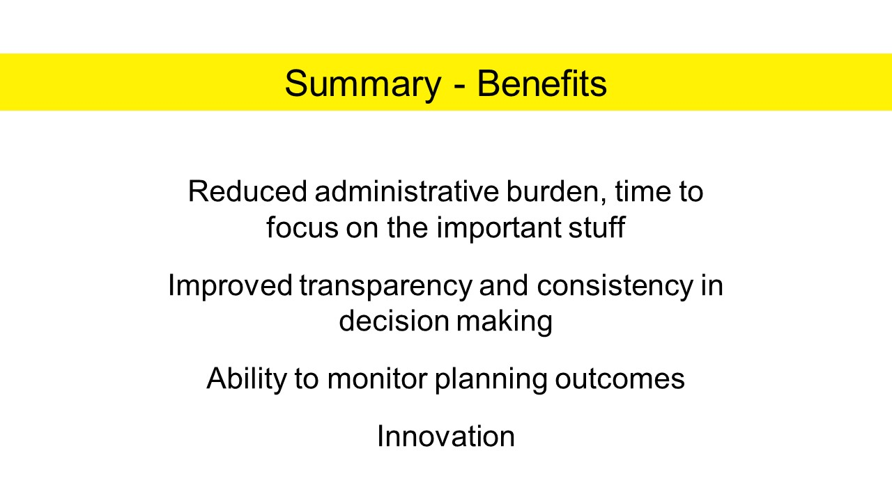So, I've talked about the tech, but what does this mean for the profession as a whole? Here are some of the most obvious benefits
The first is that it would allow planners to drop the admin and get on with the things that they really should be doing, tackling issues that really matter to our cities and communities. Tasks like community consultation and collaborative design, things that a computer can't do so easily.
The Second, as we already discussed, is the potential to improve transparency and consistency in decision making, with greater access to information and the reasons for planning decisions.
Thirdly (my particular area of interest) is that this technology, if implemented, gives us the ability to feasibly monitor planning outcomes and keep track of a changing and growing city.
Finally, getting this basic stuff right means we finally have a platform from which innovation can occur. The potential applications that can be built to assist planners in their work, and help the community understand planning are huge, including many that we have no doubt not even thought about.
However, there are also a number of challenges. There is a lot of work to do to improve machine readability, interoperability and set up APIs. To set this up in a way that will generate the most impact will probably require an unprecedented level of cooperation and collaboration between local authorities, between states, and even internationally. But that's okay, because we also have the digital tools to do this now.
Finally, as a profession we do need to look at upskilling. Firstly, if planners want to continue to engage with urban research, the datasets are just too big now for Excel and traditional administrative analytical tools, they will need to learn to code. We also have a much better change of success if we have more planners who are able to engage with the technology, so we can shape it ourselves, specifically for what we need.
So, the next steps. PIA NSW has just initiated a PlanTech working group to investigate digital transformation in the profession. Over the next 12 months we will be drafting a position paper for PIA NSW and developing a strategy for PIA to address these topics. We will be collaborating closely with the profession and want to hear from anyone with interest or expertise, whether or not you are based in NSW. We hope that the work we do can translate to other states and at a national level. If you're interested please send us an e-mail to introduce yourself.
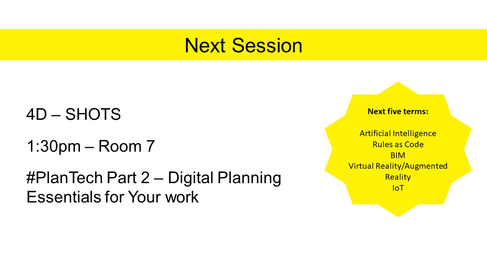Also, there is a workshop this afternoon, and what we are going to do is to break down common planning tasks and identify where this technology applies, whether you work in the statutory space, writing or assessing development applications, or whether you are involved in strategic policy development.
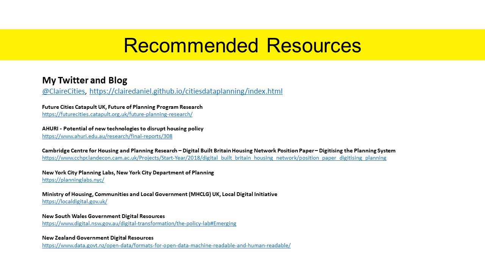Finally, I have left some useful resources here. Please check them out. Thank you.
 @ClaireCities
@ClaireCities